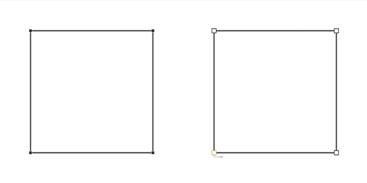
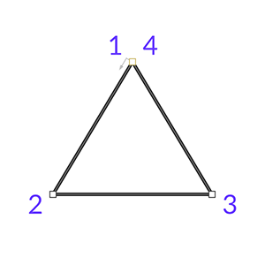
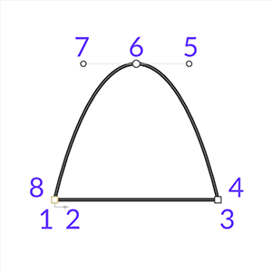

Формы
Введение
Формы (Shapes) — это слои, которые можно рисовать в окне просмотра и анимировать с помощью ключевых кадров и/или поведений.
Фигуры
Фигура (Shape) — это тип слоя, содержащий меш (Mesh), который можно стилизовать с помощью заливки (Fill) и оводки (Stroke).
Примерами слоёв Shape в Cavalry являются Basic Shape, Text Shape и Duplicator.
Particle Shape — это исключение из этого определения, которое созданно для эффективной обработки большого количества частиц.
Слой Shape может принимать две формы в Cavalry:
- Shape — Shape содержит настраиваемые атрибуты, которые можно редактировать для изменения её Path. Например, Rectangle включает атрибут Size (Width/Height), а Ellipse — атрибут Radius.
- Editable Shape — Editable Shape — это не процедурный Shape, содержащий Editable Path, который можно редактировать с помощью инструмента Edit Shape tool.
Meshes
Mesh — это контейнер, состоящий из следующих компонентов:
- Transform — Position, Rotation, Scale и Pivot.
- Fill — цвет, используемый для заливки внутренней области замкнутого пути.
- Stroke — цвет, используемый для контура пути.
- Path — геометрический примитив, состоящий из линий и кривых. Path может содержать несколько Contours — частей Path, не соединённых друг с другом.
- Child Meshes — дочерние элементы родительского Mesh.
Meshes могут содержать дочерние элементы, образуя иерархии. Например, Text Shape содержит дочерний элемент для каждой строки, затем слова и затем символа. Поскольку каждый Mesh имеет собственные Transform, Fill и Stroke, это позволяет анимировать текст на уровне строки/слова/символа.
Text Shape
- Line
- Word
- Character
Sub-Mesh Deformer можно использовать для редактирования каждого дочернего mesh, задавая глубину в иерархии для воздействия. Эта идея также применима к Fill, Stroke и Transform у Mesh.
Mesh Explorer
Mesh Explorer можно использовать для отображения иерархии Shape и понимания того, какое влияние окажут другие слои, способные управлять её дочерними mesh.
Paths
Path — это геометрический примитив, состоящий из линий и кривых. Внутри Path может быть несколько несоединённых контуров, что делает возможным создание отверстий. Линии и кривые, образующие Path, могут состоять из различных типов bézier, прямых линий или специальных маркеров, закрывающих контур или начинающих новый.
Path оптимизирован для отрисовки в реальном времени и поэтому отличается от Editable Path тем, что его нельзя редактировать, перемещая точки во Viewport. Path следует преобразовать в Editable Shape через Shape Menu, чтобы получить возможность прямого редактирования и анимации Path.
Path и Editable Path выглядят по-разному во Viewport при выборе инструментом Edit Shape tool. Editable Path отображает более крупные точки, указывающие на возможность их редактирования.

Editable Paths
Editable Path — часть особого типа слоя Shape, называемого Editable Shape. Это геометрический примитив, построенный с использованием Editable Points, определяющих форму пути. Форма Path описывается линиями и кривыми с контрольными точками (примитив, ориентированный на кривые), тогда как форма Editable Path описывается точками с ручками (примитив, ориентированный на точки). Это различие делает Editable Paths более удобными в работе, поскольку художники обычно мыслят путями как точками с bézier-ручками, а не кривыми.
Назначение Editable Path — сделать рисование и редактирование путей во Viewport простым и интуитивным с помощью инструмента Edit Shape tool.
Поскольку Editable Path — это абстрактное представление фактического оптимизированного Path, отрисовываемого во Viewport, количество видимых точек Path может отличаться от фактического количества точек. Рассмотрим пример простого треугольника:

Shape с 3 видимыми точками, включающий также bézier-точки, фактически построен из 8 точек.

Это важно понимать при использовании Mesh Explorer для проверки Point Count у Shape.
Editable Points
Editable Points определяют форму Editable Path через различные позиции и настройки:
- Position
- In Handle Position
- Out Handle Position
- Weight Locked
- Gradient Locked
Когда и In Handle, и Out Handle не заданы, точка обрабатывается как Corner Point.
pointId может использоваться другими
слоями (Duplicator, Constraints и т.д.) для размещения
Shapes в точках других Shapes. Первый pointId —
pointId0 — увеличивается в направлении Path
на основе точек, видимых во Viewport; ручки игнорируются.